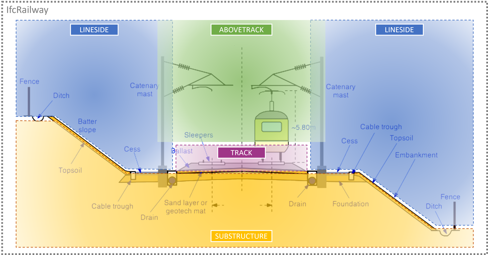
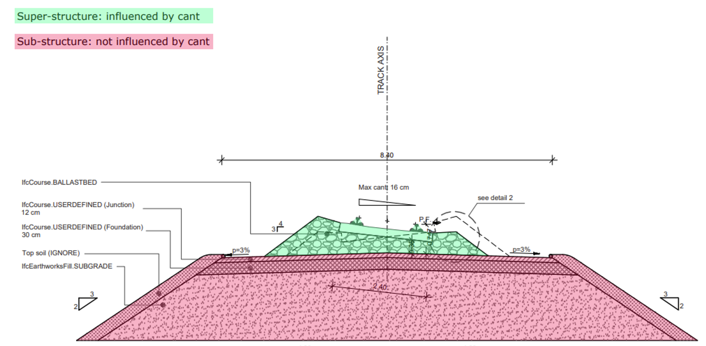
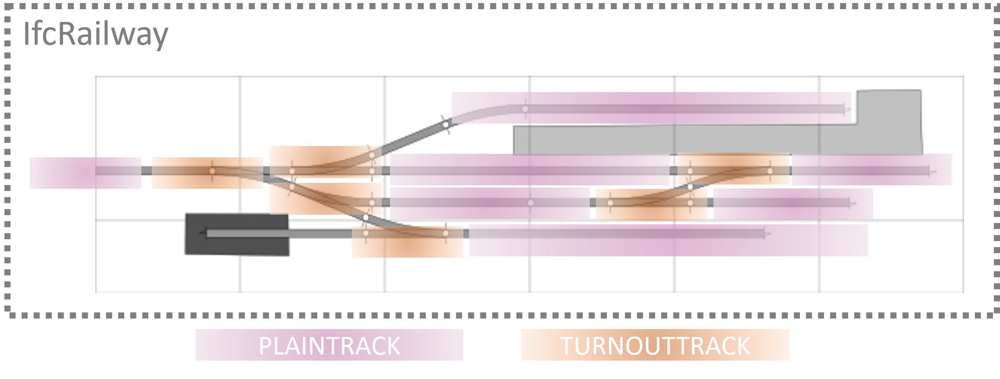

7.8.2.2 IfcRailwayPartTypeEnum
7.8.2.2.1 Semantic definition
The IfcRailwayPartTypeEnum defines the range of different types of railway part that can be specified.
A railway line can be spatially organised into several parts, using a vertical, longitudinal and lateral criteria for its division. There is not one standardised way of spatially dividing the line, as this depends on the use case. The _IfcRailwayPart_s that can be used to spatially organise a line are:
- Track, which can be further described by
- Plain tracks
- Turnout tracks
- Dilatation tracks
- Or other track parts
- Line-side, which can be further described by
- Line-side parts
- Substructure (for constructed ground)
- Above-track
See descriptions of enumeration types for further details. Below are some suggestions on how parts can be used to spatially organise a railway line.
Vertical organisation

Such more advanced cases might require a specific spatial organisation.
Detailed vertical organisation If required by the use case, the SUBSTRUCTURE part can contain elements such as IfcCourse or IfcEarthworksFill to distinguish the different substructure layers. An example is captured in the Figure below.

Longitudinal organisation
Tracks may also have a longitudinal organisation based on track specificities:
- PLAINTRACK for the plain line tracks.
- TURNOUTTRACK for the area of turnouts.
As depicted in the example Figure below. Other parts, not included in the example, may be: * DILATATIONTRACK for the area of dilatation panels. * TRACKPART for generic-purpose longitudinal organisation of parts of the track.

Mixed organisation The attribute IfcFacilityPart.UsageType allows to to spatially organise the same dataset using multiple criteria. For example, a general vertical organisation, like in Figure 7.8.2.2.A, and a further longitudinal organisation just for the track, as in Figure 7.8.2.2.B.
7.8.2.2.2 Type values
| Type | Description |
|---|---|
ABOVETRACK
|
A spatial structure element that contains elements that are positioned above or over the track, for example catenary lines and suspension systems. |
DILATIONTRACK
|
No description available. |
LINESIDE
|
A spatial structure element that contains elements of the railway that are not in or over the tracks, hence line-side. |
LINESIDEPART
|
A spatial structure element to further divide a line-side part. It can be used to distinguish line-side parts into more manageable volumes, for engineering purposes. |
PLAINTRACK
|
A spatial structure element to further divide a track. It does do not contain any turnout panel or dilatation panel. |
SUBSTRUCTURE
|
A spatial structure element that contains elements that are positioned below the track, for example the earthwork platform, prepared subgrade and embankment. This can be above or below finished ground level. |
TRACK
|
A spatial structure element that contains track-related elements, for example rails and sleepers. |
TRACKPART
|
A spatial structure element to further divide a track, for purposes that do not fall into these categories: plain-track, turnout-track, dilatation-track. |
TURNOUTTRACK
|
A spatial structure element to further divide a track. It contains turnouts, and does not contain any plain track or dilatation panel. |
USERDEFINED
|
User-defined type |
NOTDEFINED
|
Undefined type. |
7.8.2.2.3 Formal representation
TYPE IfcRailwayPartTypeEnum = ENUMERATION OF
(ABOVETRACK
,DILATIONTRACK
,LINESIDE
,LINESIDEPART
,PLAINTRACK
,SUBSTRUCTURE
,TRACK
,TRACKPART
,TURNOUTTRACK
,USERDEFINED
,NOTDEFINED);
END_TYPE;